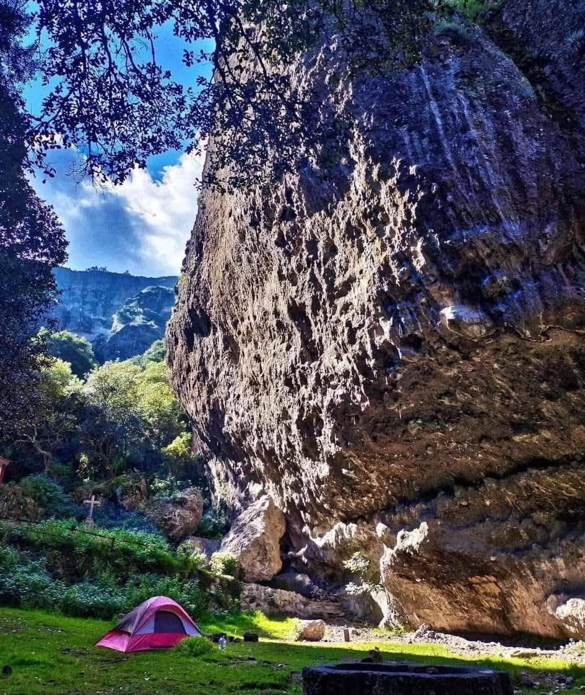
Parque Ecoturístico Las Peñas de Dexcani
Impresionantes formaciones rocosas ideales para el senderismo, la escalada deportiva, el rapel, el ciclismo de montaña y el campismo en un entorno de bosque de encinos y pinos.
Cómo llegar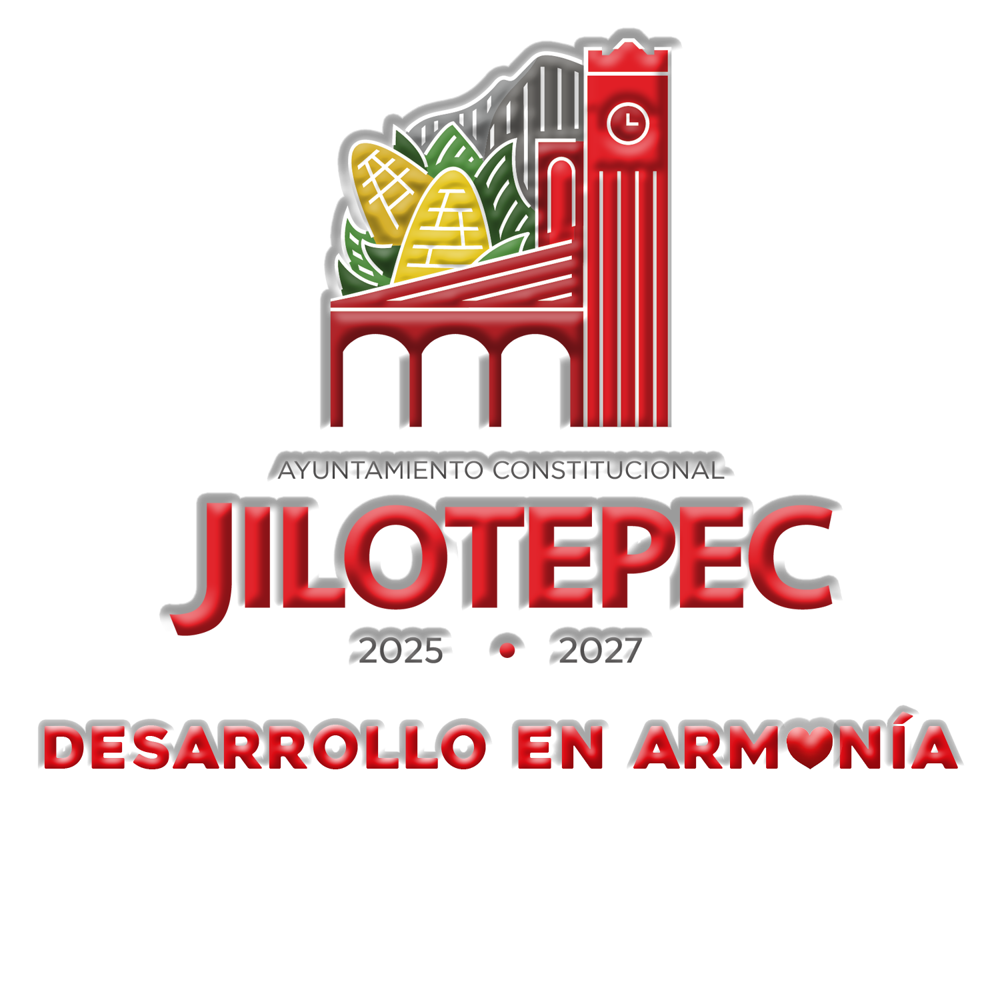
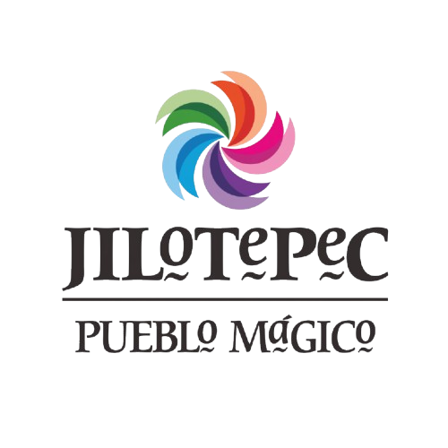
Descubre la riqueza natural, histórica, arquitectónica y cultural que hace único a nuestro Pueblo Mágico.
Espacios naturales ideales para la aventura, el descanso y el contacto con la biodiversidad.

Impresionantes formaciones rocosas ideales para el senderismo, la escalada deportiva, el rapel, el ciclismo de montaña y el campismo en un entorno de bosque de encinos y pinos.
Cómo llegar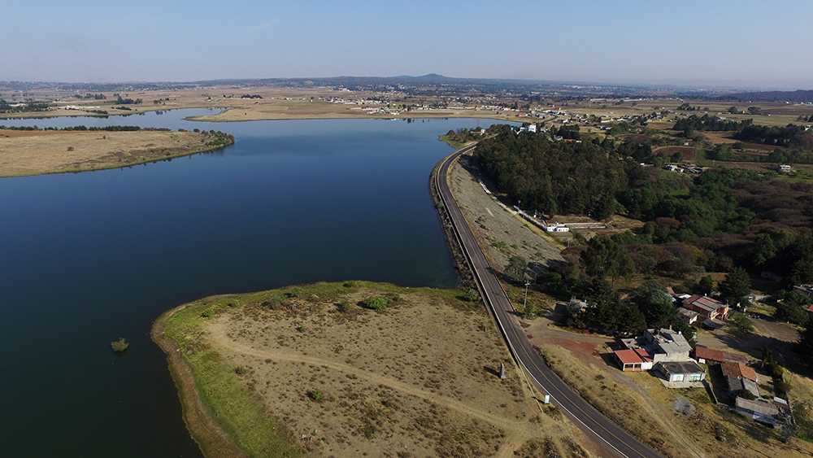
Un magnífico cuerpo de agua rodeado de áreas verdes donde se puede practicar la pesca deportiva, dar paseos en lancha, realizar días de campo familiares y degustar carpa fresca.
Cómo llegar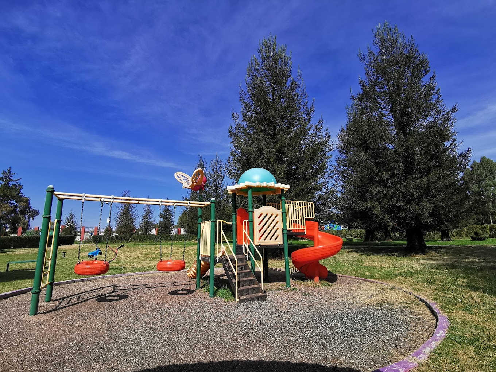
Un espacio natural único en la región por albergar majestuosos ejemplares de sequoias, árboles de gran altura que ofrecen un ambiente fresco, tranquilo y perfecto para caminatas.
Cómo llegarJoyas de la arquitectura colonial e hitos de fe que guardan siglos de tradición.
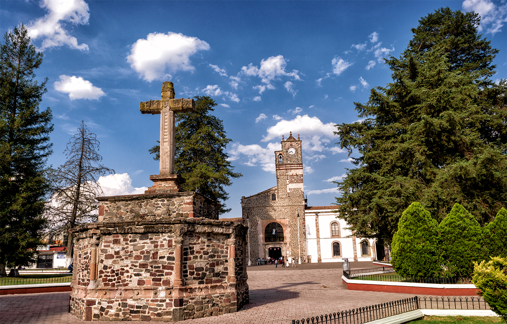
Construida durante la época colonial por la orden franciscana, destaca por su imponente fachada de cantera, retablos barrocos e interiores con alto valor artístico y espiritual.
Cómo llegar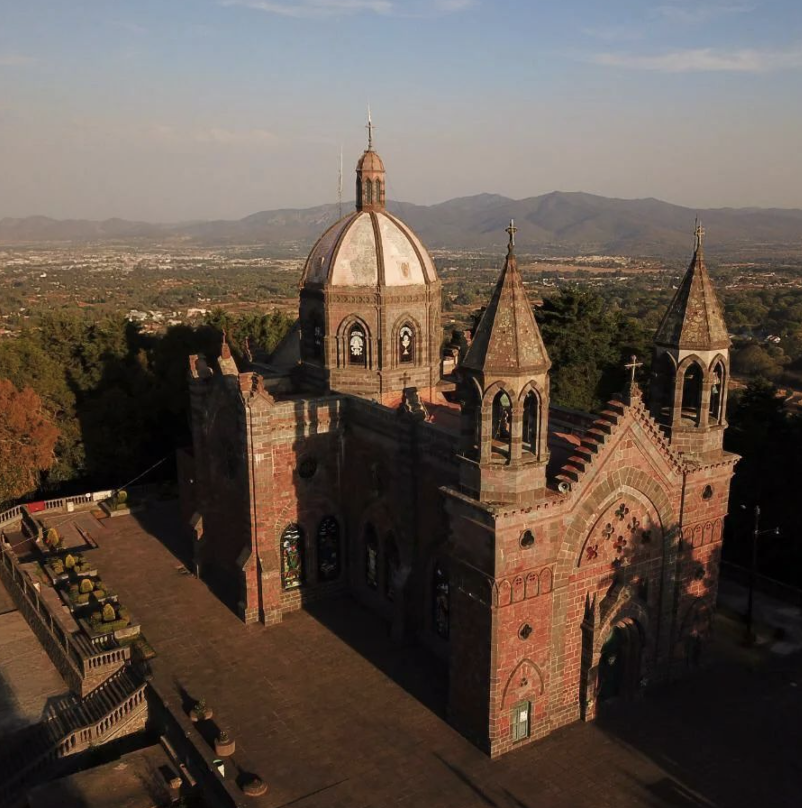
Emblemático centro de peregrinación de la región. Su historia está ligada a la aparición milagrosa de la imagen de la Virgen en una piedra, atrayendo a miles de feligreses cada año.
Cómo llegar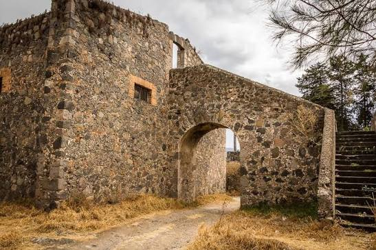
Antigua propiedad virreinal que conserva su arquitectura colonial, amplios patios y jardines históricos. Representa el pasado virreinal y agrícola de Jilotepec.
Cómo llegar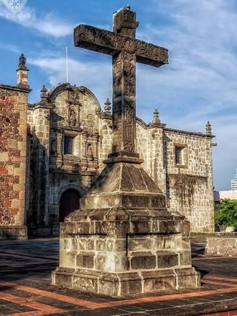
Monumento histórico de piedra tallada erigido durante la evangelización franciscana. Es una de las cruces monolíticas más importantes y antiguas de la zona.
Cómo llegar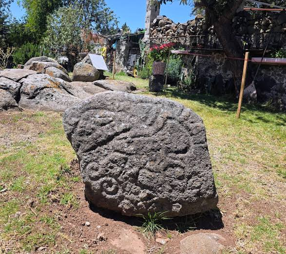
Vestigios arqueológicos prehispánicos grabados sobre roca por las antiguas culturas Otomíes, representando figuras humanas, animales y símbolos cosmogónicos.
Cómo llegar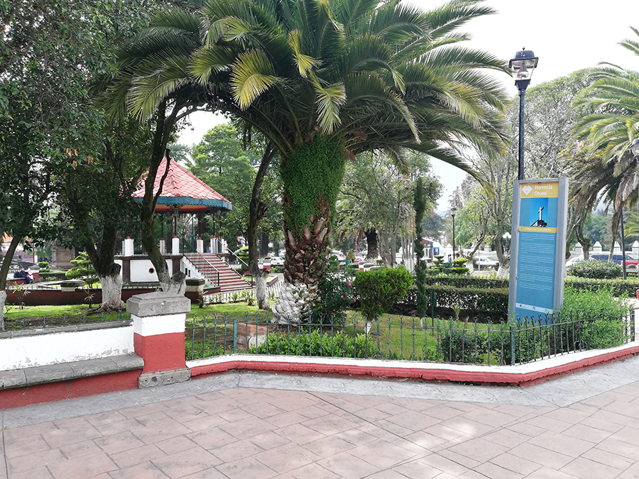
El corazón histórico de Jilotepec. Un hermoso espacio arbolado con un tradicional kiosco de hierro forjado, ideal para caminar, disfrutar de nieves artesanales y admirar los portales.
📍 CÓMO LLEGAR Cómo llegar